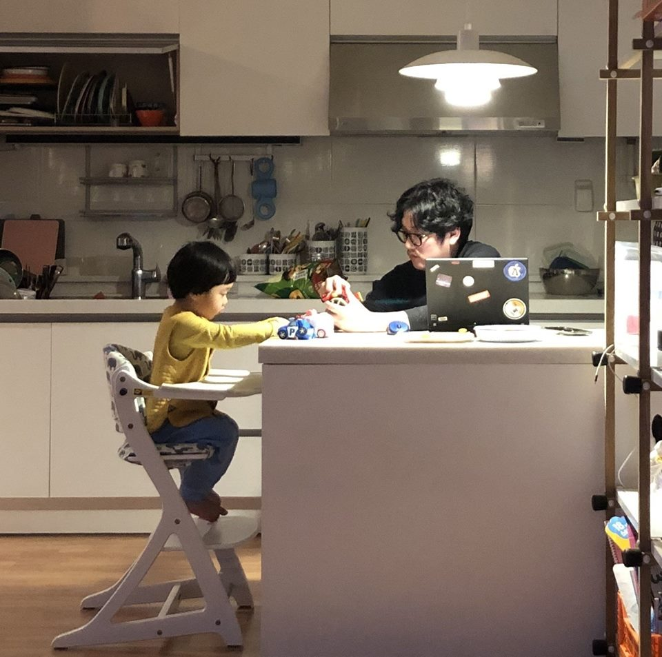

|
 + Bio Nick: SigmoiD Contact: alphabet@hotmail.co.kr Linkedin: https://www.linkedin.com/in/jiyun-kim-61a44438/
+ Dev Ethreum code analysis blog: https://steemit.com/@sigmoid GitHub: https://github.com/NAKsir-melody/
+ Presentations & publish EthereumDB in a nutshell: https://hackmd.io/j8iKhuZURMi0hPzs6WzCWg All about Ethereum Gas: https://hackmd.io/ktrDCA-JTBWX9H1Nso7Gcg Event: for outside watchers: https://hackmd.io/bN3v1UERT_yz5D4m8NvGRg Whisper: http://bit.ly/whisper_sigmoid My ethereum analysis: http://bit.ly/ethereum_sigmoid Ethereum data layer: http://bit.ly/eth_data_layer Look into Geth: http://bit.ly/look_into_geth
+ Translations (EN->KR) ZKSNARK in a nut shell: http://bit.ly/zksnarks-korean Practical_Byzantine_Fault_Tolerance(korean): http://bit.ly/pbft_korean
|
+ Bio Nick: maczniak Contact: maczniak@gmail.com Linkedin: https://www.linkedin.com/in/jeongho-jeon/
+ Dev GitHub: https://github.com/maczniak/
+ Presentations & publish (2018.12.18) Devstamp, Look into Geth (slide) (2018.11.17) Radical Market Meetup, Radical Market and Blockchain (video, newspaper) (2018.08.10) Etherstudy 3rd Conference, Scalability Techniques: Sharding (2018.07.23) Whitepaper Foundation, Counterfactual (video) (2018.07.16) Whitepaper Foundation, Accumulator (video) (2018.07.09) Whitepaper Foundation, Stateless Block Verification (video) (2018.03.09) Etherstudy Conference, POS Consensus Algorithm Capser (slide) |